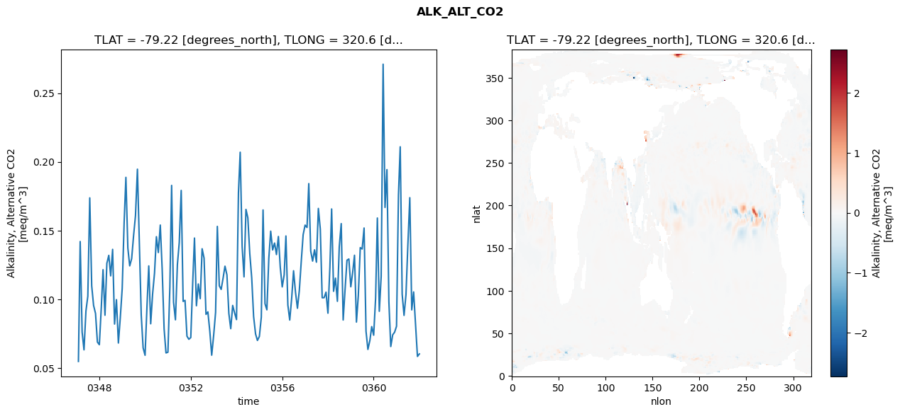
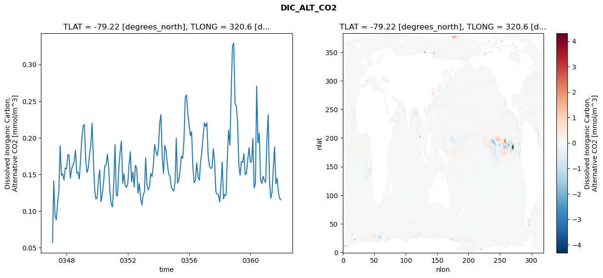
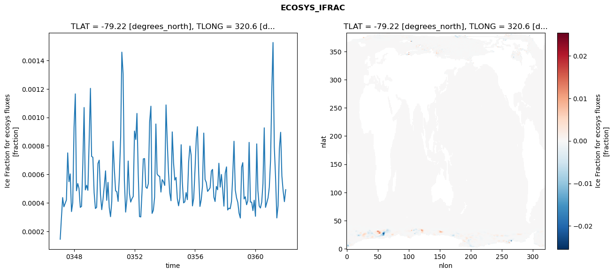
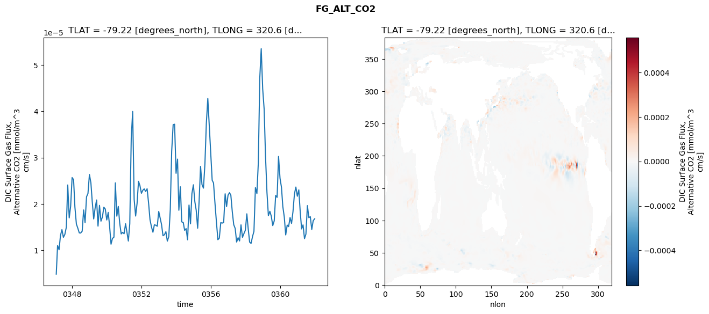

glb-dor_North_Atlantic_basin_004_1999-01-01_00016#
Simulation details#
Case: smyle.cdr-atlas-v0.glb-dor_North_Atlantic_basin_004_1999-01-01_00016.001
Basin: North_Atlantic_basin
Polygon: 4.0
Start date: 1999-01
Show code cell source Hide code cell source
import xarray as xr
import matplotlib.pyplot as plt
Show code cell source Hide code cell source
zarr_store = "/path/to/zarr/store"
# Parameters
zarr_store = "/global/cfs/projectdirs/m4746/Projects/Ocean-CDR-Atlas-v0/data/validation/smyle.cdr-atlas-v0.glb-dor_North_Atlantic_basin_004_1999-01-01_00016.001.validation.zarr"
Show code cell source Hide code cell source
%%time
ds_o = xr.open_zarr(zarr_store).compute()
ds_o
CPU times: user 636 ms, sys: 467 ms, total: 1.1 s
Wall time: 1.42 s
<xarray.Dataset> Size: 2MB
Dimensions: (nlat: 384, nlon: 320, time: 180)
Coordinates:
TLAT float64 8B -79.22
TLONG float64 8B 320.6
ULAT float64 8B -78.95
ULONG float64 8B 321.1
* time (time) object 1kB 0347-02-01 00:00:00 ... 0362-01-01 0...
z_t float32 4B 500.0
Dimensions without coordinates: nlat, nlon
Data variables:
ALK_ALT_CO2_diff (nlat, nlon) float32 492kB nan nan nan ... nan nan nan
ALK_ALT_CO2_rmse (time) float64 1kB 0.05476 0.142 ... 0.05841 0.06023
DIC_ALT_CO2_diff (nlat, nlon) float32 492kB nan nan nan ... nan nan nan
DIC_ALT_CO2_rmse (time) float64 1kB 0.05676 0.1409 ... 0.117 0.1152
ECOSYS_IFRAC_diff (nlat, nlon) float32 492kB nan nan nan ... nan nan nan
ECOSYS_IFRAC_rmse (time) float64 1kB 0.0001444 0.0002875 ... 0.0004925
FG_ALT_CO2_diff (nlat, nlon) float32 492kB nan nan nan ... nan nan nan
FG_ALT_CO2_rmse (time) float64 1kB 4.806e-06 1.098e-05 ... 1.676e-05xarray.Dataset
- nlat: 384
- nlon: 320
- time: 180
- TLAT()float64-79.22
- long_name :
- array of t-grid latitudes
- units :
- degrees_north
array(-79.22052261)
- TLONG()float64320.6
- long_name :
- array of t-grid longitudes
- units :
- degrees_east
array(320.56250892)
- ULAT()float64-78.95
- long_name :
- array of u-grid latitudes
- units :
- degrees_north
array(-78.95289509)
- ULONG()float64321.1
- long_name :
- array of u-grid longitudes
- units :
- degrees_east
array(321.12500894)
- time(time)object0347-02-01 00:00:00 ... 0362-01-...
- bounds :
- time_bound
- long_name :
- time
array([cftime.DatetimeNoLeap(347, 2, 1, 0, 0, 0, 0, has_year_zero=True), cftime.DatetimeNoLeap(347, 3, 1, 0, 0, 0, 0, has_year_zero=True), cftime.DatetimeNoLeap(347, 4, 1, 0, 0, 0, 0, has_year_zero=True), cftime.DatetimeNoLeap(347, 5, 1, 0, 0, 0, 0, has_year_zero=True), cftime.DatetimeNoLeap(347, 6, 1, 0, 0, 0, 0, has_year_zero=True), cftime.DatetimeNoLeap(347, 7, 1, 0, 0, 0, 0, has_year_zero=True), cftime.DatetimeNoLeap(347, 8, 1, 0, 0, 0, 0, has_year_zero=True), cftime.DatetimeNoLeap(347, 9, 1, 0, 0, 0, 0, has_year_zero=True), cftime.DatetimeNoLeap(347, 10, 1, 0, 0, 0, 0, has_year_zero=True), cftime.DatetimeNoLeap(347, 11, 1, 0, 0, 0, 0, has_year_zero=True), cftime.DatetimeNoLeap(347, 12, 1, 0, 0, 0, 0, has_year_zero=True), cftime.DatetimeNoLeap(348, 1, 1, 0, 0, 0, 0, has_year_zero=True), cftime.DatetimeNoLeap(348, 2, 1, 0, 0, 0, 0, has_year_zero=True), cftime.DatetimeNoLeap(348, 3, 1, 0, 0, 0, 0, has_year_zero=True), cftime.DatetimeNoLeap(348, 4, 1, 0, 0, 0, 0, has_year_zero=True), cftime.DatetimeNoLeap(348, 5, 1, 0, 0, 0, 0, has_year_zero=True), cftime.DatetimeNoLeap(348, 6, 1, 0, 0, 0, 0, has_year_zero=True), cftime.DatetimeNoLeap(348, 7, 1, 0, 0, 0, 0, has_year_zero=True), cftime.DatetimeNoLeap(348, 8, 1, 0, 0, 0, 0, has_year_zero=True), cftime.DatetimeNoLeap(348, 9, 1, 0, 0, 0, 0, has_year_zero=True), cftime.DatetimeNoLeap(348, 10, 1, 0, 0, 0, 0, has_year_zero=True), cftime.DatetimeNoLeap(348, 11, 1, 0, 0, 0, 0, has_year_zero=True), cftime.DatetimeNoLeap(348, 12, 1, 0, 0, 0, 0, has_year_zero=True), cftime.DatetimeNoLeap(349, 1, 1, 0, 0, 0, 0, has_year_zero=True), cftime.DatetimeNoLeap(349, 2, 1, 0, 0, 0, 0, has_year_zero=True), cftime.DatetimeNoLeap(349, 3, 1, 0, 0, 0, 0, has_year_zero=True), cftime.DatetimeNoLeap(349, 4, 1, 0, 0, 0, 0, has_year_zero=True), cftime.DatetimeNoLeap(349, 5, 1, 0, 0, 0, 0, has_year_zero=True), cftime.DatetimeNoLeap(349, 6, 1, 0, 0, 0, 0, has_year_zero=True), cftime.DatetimeNoLeap(349, 7, 1, 0, 0, 0, 0, has_year_zero=True), cftime.DatetimeNoLeap(349, 8, 1, 0, 0, 0, 0, has_year_zero=True), cftime.DatetimeNoLeap(349, 9, 1, 0, 0, 0, 0, has_year_zero=True), cftime.DatetimeNoLeap(349, 10, 1, 0, 0, 0, 0, has_year_zero=True), cftime.DatetimeNoLeap(349, 11, 1, 0, 0, 0, 0, has_year_zero=True), cftime.DatetimeNoLeap(349, 12, 1, 0, 0, 0, 0, has_year_zero=True), cftime.DatetimeNoLeap(350, 1, 1, 0, 0, 0, 0, has_year_zero=True), cftime.DatetimeNoLeap(350, 2, 1, 0, 0, 0, 0, has_year_zero=True), cftime.DatetimeNoLeap(350, 3, 1, 0, 0, 0, 0, has_year_zero=True), cftime.DatetimeNoLeap(350, 4, 1, 0, 0, 0, 0, has_year_zero=True), cftime.DatetimeNoLeap(350, 5, 1, 0, 0, 0, 0, has_year_zero=True), cftime.DatetimeNoLeap(350, 6, 1, 0, 0, 0, 0, has_year_zero=True), cftime.DatetimeNoLeap(350, 7, 1, 0, 0, 0, 0, has_year_zero=True), cftime.DatetimeNoLeap(350, 8, 1, 0, 0, 0, 0, has_year_zero=True), cftime.DatetimeNoLeap(350, 9, 1, 0, 0, 0, 0, has_year_zero=True), cftime.DatetimeNoLeap(350, 10, 1, 0, 0, 0, 0, has_year_zero=True), cftime.DatetimeNoLeap(350, 11, 1, 0, 0, 0, 0, has_year_zero=True), cftime.DatetimeNoLeap(350, 12, 1, 0, 0, 0, 0, has_year_zero=True), cftime.DatetimeNoLeap(351, 1, 1, 0, 0, 0, 0, has_year_zero=True), cftime.DatetimeNoLeap(351, 2, 1, 0, 0, 0, 0, has_year_zero=True), cftime.DatetimeNoLeap(351, 3, 1, 0, 0, 0, 0, has_year_zero=True), cftime.DatetimeNoLeap(351, 4, 1, 0, 0, 0, 0, has_year_zero=True), cftime.DatetimeNoLeap(351, 5, 1, 0, 0, 0, 0, has_year_zero=True), cftime.DatetimeNoLeap(351, 6, 1, 0, 0, 0, 0, has_year_zero=True), cftime.DatetimeNoLeap(351, 7, 1, 0, 0, 0, 0, has_year_zero=True), cftime.DatetimeNoLeap(351, 8, 1, 0, 0, 0, 0, has_year_zero=True), cftime.DatetimeNoLeap(351, 9, 1, 0, 0, 0, 0, has_year_zero=True), cftime.DatetimeNoLeap(351, 10, 1, 0, 0, 0, 0, has_year_zero=True), cftime.DatetimeNoLeap(351, 11, 1, 0, 0, 0, 0, has_year_zero=True), cftime.DatetimeNoLeap(351, 12, 1, 0, 0, 0, 0, has_year_zero=True), cftime.DatetimeNoLeap(352, 1, 1, 0, 0, 0, 0, has_year_zero=True), cftime.DatetimeNoLeap(352, 2, 1, 0, 0, 0, 0, has_year_zero=True), cftime.DatetimeNoLeap(352, 3, 1, 0, 0, 0, 0, has_year_zero=True), cftime.DatetimeNoLeap(352, 4, 1, 0, 0, 0, 0, has_year_zero=True), cftime.DatetimeNoLeap(352, 5, 1, 0, 0, 0, 0, has_year_zero=True), cftime.DatetimeNoLeap(352, 6, 1, 0, 0, 0, 0, has_year_zero=True), cftime.DatetimeNoLeap(352, 7, 1, 0, 0, 0, 0, has_year_zero=True), cftime.DatetimeNoLeap(352, 8, 1, 0, 0, 0, 0, has_year_zero=True), cftime.DatetimeNoLeap(352, 9, 1, 0, 0, 0, 0, has_year_zero=True), cftime.DatetimeNoLeap(352, 10, 1, 0, 0, 0, 0, has_year_zero=True), cftime.DatetimeNoLeap(352, 11, 1, 0, 0, 0, 0, has_year_zero=True), cftime.DatetimeNoLeap(352, 12, 1, 0, 0, 0, 0, has_year_zero=True), cftime.DatetimeNoLeap(353, 1, 1, 0, 0, 0, 0, has_year_zero=True), cftime.DatetimeNoLeap(353, 2, 1, 0, 0, 0, 0, has_year_zero=True), cftime.DatetimeNoLeap(353, 3, 1, 0, 0, 0, 0, has_year_zero=True), cftime.DatetimeNoLeap(353, 4, 1, 0, 0, 0, 0, has_year_zero=True), cftime.DatetimeNoLeap(353, 5, 1, 0, 0, 0, 0, has_year_zero=True), cftime.DatetimeNoLeap(353, 6, 1, 0, 0, 0, 0, has_year_zero=True), cftime.DatetimeNoLeap(353, 7, 1, 0, 0, 0, 0, has_year_zero=True), cftime.DatetimeNoLeap(353, 8, 1, 0, 0, 0, 0, has_year_zero=True), cftime.DatetimeNoLeap(353, 9, 1, 0, 0, 0, 0, has_year_zero=True), cftime.DatetimeNoLeap(353, 10, 1, 0, 0, 0, 0, has_year_zero=True), cftime.DatetimeNoLeap(353, 11, 1, 0, 0, 0, 0, has_year_zero=True), cftime.DatetimeNoLeap(353, 12, 1, 0, 0, 0, 0, has_year_zero=True), cftime.DatetimeNoLeap(354, 1, 1, 0, 0, 0, 0, has_year_zero=True), cftime.DatetimeNoLeap(354, 2, 1, 0, 0, 0, 0, has_year_zero=True), cftime.DatetimeNoLeap(354, 3, 1, 0, 0, 0, 0, has_year_zero=True), cftime.DatetimeNoLeap(354, 4, 1, 0, 0, 0, 0, has_year_zero=True), cftime.DatetimeNoLeap(354, 5, 1, 0, 0, 0, 0, has_year_zero=True), cftime.DatetimeNoLeap(354, 6, 1, 0, 0, 0, 0, has_year_zero=True), cftime.DatetimeNoLeap(354, 7, 1, 0, 0, 0, 0, has_year_zero=True), cftime.DatetimeNoLeap(354, 8, 1, 0, 0, 0, 0, has_year_zero=True), cftime.DatetimeNoLeap(354, 9, 1, 0, 0, 0, 0, has_year_zero=True), cftime.DatetimeNoLeap(354, 10, 1, 0, 0, 0, 0, has_year_zero=True), cftime.DatetimeNoLeap(354, 11, 1, 0, 0, 0, 0, has_year_zero=True), cftime.DatetimeNoLeap(354, 12, 1, 0, 0, 0, 0, has_year_zero=True), cftime.DatetimeNoLeap(355, 1, 1, 0, 0, 0, 0, has_year_zero=True), cftime.DatetimeNoLeap(355, 2, 1, 0, 0, 0, 0, has_year_zero=True), cftime.DatetimeNoLeap(355, 3, 1, 0, 0, 0, 0, has_year_zero=True), cftime.DatetimeNoLeap(355, 4, 1, 0, 0, 0, 0, has_year_zero=True), cftime.DatetimeNoLeap(355, 5, 1, 0, 0, 0, 0, has_year_zero=True), cftime.DatetimeNoLeap(355, 6, 1, 0, 0, 0, 0, has_year_zero=True), cftime.DatetimeNoLeap(355, 7, 1, 0, 0, 0, 0, has_year_zero=True), cftime.DatetimeNoLeap(355, 8, 1, 0, 0, 0, 0, has_year_zero=True), cftime.DatetimeNoLeap(355, 9, 1, 0, 0, 0, 0, has_year_zero=True), cftime.DatetimeNoLeap(355, 10, 1, 0, 0, 0, 0, has_year_zero=True), cftime.DatetimeNoLeap(355, 11, 1, 0, 0, 0, 0, has_year_zero=True), cftime.DatetimeNoLeap(355, 12, 1, 0, 0, 0, 0, has_year_zero=True), cftime.DatetimeNoLeap(356, 1, 1, 0, 0, 0, 0, has_year_zero=True), cftime.DatetimeNoLeap(356, 2, 1, 0, 0, 0, 0, has_year_zero=True), cftime.DatetimeNoLeap(356, 3, 1, 0, 0, 0, 0, has_year_zero=True), cftime.DatetimeNoLeap(356, 4, 1, 0, 0, 0, 0, has_year_zero=True), cftime.DatetimeNoLeap(356, 5, 1, 0, 0, 0, 0, has_year_zero=True), cftime.DatetimeNoLeap(356, 6, 1, 0, 0, 0, 0, has_year_zero=True), cftime.DatetimeNoLeap(356, 7, 1, 0, 0, 0, 0, has_year_zero=True), cftime.DatetimeNoLeap(356, 8, 1, 0, 0, 0, 0, has_year_zero=True), cftime.DatetimeNoLeap(356, 9, 1, 0, 0, 0, 0, has_year_zero=True), cftime.DatetimeNoLeap(356, 10, 1, 0, 0, 0, 0, has_year_zero=True), cftime.DatetimeNoLeap(356, 11, 1, 0, 0, 0, 0, has_year_zero=True), cftime.DatetimeNoLeap(356, 12, 1, 0, 0, 0, 0, has_year_zero=True), cftime.DatetimeNoLeap(357, 1, 1, 0, 0, 0, 0, has_year_zero=True), cftime.DatetimeNoLeap(357, 2, 1, 0, 0, 0, 0, has_year_zero=True), cftime.DatetimeNoLeap(357, 3, 1, 0, 0, 0, 0, has_year_zero=True), cftime.DatetimeNoLeap(357, 4, 1, 0, 0, 0, 0, has_year_zero=True), cftime.DatetimeNoLeap(357, 5, 1, 0, 0, 0, 0, has_year_zero=True), cftime.DatetimeNoLeap(357, 6, 1, 0, 0, 0, 0, has_year_zero=True), cftime.DatetimeNoLeap(357, 7, 1, 0, 0, 0, 0, has_year_zero=True), cftime.DatetimeNoLeap(357, 8, 1, 0, 0, 0, 0, has_year_zero=True), cftime.DatetimeNoLeap(357, 9, 1, 0, 0, 0, 0, has_year_zero=True), cftime.DatetimeNoLeap(357, 10, 1, 0, 0, 0, 0, has_year_zero=True), cftime.DatetimeNoLeap(357, 11, 1, 0, 0, 0, 0, has_year_zero=True), cftime.DatetimeNoLeap(357, 12, 1, 0, 0, 0, 0, has_year_zero=True), cftime.DatetimeNoLeap(358, 1, 1, 0, 0, 0, 0, has_year_zero=True), cftime.DatetimeNoLeap(358, 2, 1, 0, 0, 0, 0, has_year_zero=True), cftime.DatetimeNoLeap(358, 3, 1, 0, 0, 0, 0, has_year_zero=True), cftime.DatetimeNoLeap(358, 4, 1, 0, 0, 0, 0, has_year_zero=True), cftime.DatetimeNoLeap(358, 5, 1, 0, 0, 0, 0, has_year_zero=True), cftime.DatetimeNoLeap(358, 6, 1, 0, 0, 0, 0, has_year_zero=True), cftime.DatetimeNoLeap(358, 7, 1, 0, 0, 0, 0, has_year_zero=True), cftime.DatetimeNoLeap(358, 8, 1, 0, 0, 0, 0, has_year_zero=True), cftime.DatetimeNoLeap(358, 9, 1, 0, 0, 0, 0, has_year_zero=True), cftime.DatetimeNoLeap(358, 10, 1, 0, 0, 0, 0, has_year_zero=True), cftime.DatetimeNoLeap(358, 11, 1, 0, 0, 0, 0, has_year_zero=True), cftime.DatetimeNoLeap(358, 12, 1, 0, 0, 0, 0, has_year_zero=True), cftime.DatetimeNoLeap(359, 1, 1, 0, 0, 0, 0, has_year_zero=True), cftime.DatetimeNoLeap(359, 2, 1, 0, 0, 0, 0, has_year_zero=True), cftime.DatetimeNoLeap(359, 3, 1, 0, 0, 0, 0, has_year_zero=True), cftime.DatetimeNoLeap(359, 4, 1, 0, 0, 0, 0, has_year_zero=True), cftime.DatetimeNoLeap(359, 5, 1, 0, 0, 0, 0, has_year_zero=True), cftime.DatetimeNoLeap(359, 6, 1, 0, 0, 0, 0, has_year_zero=True), cftime.DatetimeNoLeap(359, 7, 1, 0, 0, 0, 0, has_year_zero=True), cftime.DatetimeNoLeap(359, 8, 1, 0, 0, 0, 0, has_year_zero=True), cftime.DatetimeNoLeap(359, 9, 1, 0, 0, 0, 0, has_year_zero=True), cftime.DatetimeNoLeap(359, 10, 1, 0, 0, 0, 0, has_year_zero=True), cftime.DatetimeNoLeap(359, 11, 1, 0, 0, 0, 0, has_year_zero=True), cftime.DatetimeNoLeap(359, 12, 1, 0, 0, 0, 0, has_year_zero=True), cftime.DatetimeNoLeap(360, 1, 1, 0, 0, 0, 0, has_year_zero=True), cftime.DatetimeNoLeap(360, 2, 1, 0, 0, 0, 0, has_year_zero=True), cftime.DatetimeNoLeap(360, 3, 1, 0, 0, 0, 0, has_year_zero=True), cftime.DatetimeNoLeap(360, 4, 1, 0, 0, 0, 0, has_year_zero=True), cftime.DatetimeNoLeap(360, 5, 1, 0, 0, 0, 0, has_year_zero=True), cftime.DatetimeNoLeap(360, 6, 1, 0, 0, 0, 0, has_year_zero=True), cftime.DatetimeNoLeap(360, 7, 1, 0, 0, 0, 0, has_year_zero=True), cftime.DatetimeNoLeap(360, 8, 1, 0, 0, 0, 0, has_year_zero=True), cftime.DatetimeNoLeap(360, 9, 1, 0, 0, 0, 0, has_year_zero=True), cftime.DatetimeNoLeap(360, 10, 1, 0, 0, 0, 0, has_year_zero=True), cftime.DatetimeNoLeap(360, 11, 1, 0, 0, 0, 0, has_year_zero=True), cftime.DatetimeNoLeap(360, 12, 1, 0, 0, 0, 0, has_year_zero=True), cftime.DatetimeNoLeap(361, 1, 1, 0, 0, 0, 0, has_year_zero=True), cftime.DatetimeNoLeap(361, 2, 1, 0, 0, 0, 0, has_year_zero=True), cftime.DatetimeNoLeap(361, 3, 1, 0, 0, 0, 0, has_year_zero=True), cftime.DatetimeNoLeap(361, 4, 1, 0, 0, 0, 0, has_year_zero=True), cftime.DatetimeNoLeap(361, 5, 1, 0, 0, 0, 0, has_year_zero=True), cftime.DatetimeNoLeap(361, 6, 1, 0, 0, 0, 0, has_year_zero=True), cftime.DatetimeNoLeap(361, 7, 1, 0, 0, 0, 0, has_year_zero=True), cftime.DatetimeNoLeap(361, 8, 1, 0, 0, 0, 0, has_year_zero=True), cftime.DatetimeNoLeap(361, 9, 1, 0, 0, 0, 0, has_year_zero=True), cftime.DatetimeNoLeap(361, 10, 1, 0, 0, 0, 0, has_year_zero=True), cftime.DatetimeNoLeap(361, 11, 1, 0, 0, 0, 0, has_year_zero=True), cftime.DatetimeNoLeap(361, 12, 1, 0, 0, 0, 0, has_year_zero=True), cftime.DatetimeNoLeap(362, 1, 1, 0, 0, 0, 0, has_year_zero=True)], dtype=object) - z_t()float32500.0
- long_name :
- depth from surface to midpoint of layer
- positive :
- down
- units :
- centimeters
- valid_max :
- 537500.0
- valid_min :
- 500.0
array(500., dtype=float32)
- ALK_ALT_CO2_diff(nlat, nlon)float32nan nan nan nan ... nan nan nan nan
- cell_methods :
- time: mean
- grid_loc :
- 3111
- long_name :
- Alkalinity, Alternative CO2
- units :
- meq/m^3
array([[ nan, nan, nan, ..., nan, nan, nan], [ nan, nan, nan, ..., nan, nan, nan], [0.02099609, 0.00732422, 0.00439453, ..., nan, nan, nan], ..., [ nan, nan, nan, ..., nan, nan, nan], [ nan, nan, nan, ..., nan, nan, nan], [ nan, nan, nan, ..., nan, nan, nan]], dtype=float32) - ALK_ALT_CO2_rmse(time)float640.05476 0.142 ... 0.05841 0.06023
- cell_methods :
- time: mean
- grid_loc :
- 3111
- long_name :
- Alkalinity, Alternative CO2
- units :
- meq/m^3
array([0.05476265, 0.14201017, 0.07613044, 0.06319637, 0.0914931 , 0.10223511, 0.17379088, 0.10976997, 0.09550645, 0.08967172, 0.06885531, 0.06693564, 0.09396654, 0.12151415, 0.08838321, 0.12617429, 0.13194955, 0.11704404, 0.13631666, 0.08196238, 0.09970803, 0.06816094, 0.08638771, 0.10788634, 0.15608635, 0.18870819, 0.13731816, 0.12430306, 0.12957774, 0.14593699, 0.16081405, 0.19466754, 0.14298957, 0.08837258, 0.06462196, 0.0592531 , 0.09536877, 0.12426747, 0.08216849, 0.10363626, 0.11912679, 0.14554118, 0.13402339, 0.15399213, 0.12211039, 0.07857829, 0.06094716, 0.06148418, 0.10902189, 0.18284817, 0.09779416, 0.08505013, 0.12513089, 0.14136194, 0.17919193, 0.09846216, 0.09921466, 0.07313168, 0.07089187, 0.07214788, 0.1124201 , 0.14454912, 0.09528877, 0.11112065, 0.100453 , 0.13674502, 0.12992429, 0.08900171, 0.09083878, 0.07660312, 0.05931622, 0.07369549, 0.09044833, 0.15302276, 0.10980352, 0.10719059, 0.11544165, 0.12408217, 0.1177947 , 0.08962087, 0.07861183, 0.095493 , 0.0901391 , 0.08520597, 0.17742835, 0.20700896, 0.13848783, 0.11630845, 0.16537381, 0.15928307, 0.13322335, 0.11548889, 0.08753758, 0.07482636, 0.07003774, 0.07292665, 0.08695974, 0.1649931 , 0.09677615, 0.09233558, 0.12991034, 0.14954873, 0.135888 , 0.14093041, 0.13255582, 0.14568238, 0.12316835, 0.10900561, 0.11776827, 0.14606364, 0.09579087, 0.08488737, 0.10089662, 0.12074007, 0.10509561, 0.09345347, 0.10638105, 0.12767207, 0.14696256, 0.15395293, 0.15223594, 0.18416877, 0.13505258, 0.12776904, 0.13597134, 0.12699055, 0.16609029, 0.15102135, 0.10110205, 0.10116462, 0.10518012, 0.08987978, 0.12322967, 0.16571468, 0.10579674, 0.11537974, 0.0985153 , 0.13829555, 0.15504427, 0.08491524, 0.10683862, 0.12844035, 0.12930105, 0.10909392, 0.12006571, 0.13203173, 0.08341203, 0.10276349, 0.13758748, 0.13659244, 0.15184771, 0.07668298, 0.0635149 , 0.06990576, 0.08011363, 0.07386262, 0.10076356, 0.15912193, 0.09125912, 0.11677798, 0.27105092, 0.1668266 , 0.1943479 , 0.09818398, 0.06562482, 0.07413425, 0.07600769, 0.0803527 , 0.17595705, 0.2109482 , 0.10366383, 0.08827026, 0.10340328, 0.13949956, 0.17391758, 0.09229084, 0.10532589, 0.08167163, 0.05840755, 0.06023442]) - DIC_ALT_CO2_diff(nlat, nlon)float32nan nan nan nan ... nan nan nan nan
- cell_methods :
- time: mean
- grid_loc :
- 3111
- long_name :
- Dissolved Inorganic Carbon, Alternative CO2
- units :
- mmol/m^3
array([[ nan, nan, nan, ..., nan, nan, nan], [ nan, nan, nan, ..., nan, nan, nan], [0.01318359, 0.00170898, 0.00048828, ..., nan, nan, nan], ..., [ nan, nan, nan, ..., nan, nan, nan], [ nan, nan, nan, ..., nan, nan, nan], [ nan, nan, nan, ..., nan, nan, nan]], dtype=float32) - DIC_ALT_CO2_rmse(time)float640.05676 0.1409 ... 0.117 0.1152
- cell_methods :
- time: mean
- grid_loc :
- 3111
- long_name :
- Dissolved Inorganic Carbon, Alternative CO2
- units :
- mmol/m^3
array([0.05676207, 0.14088806, 0.09367299, 0.08780916, 0.11081757, 0.12774748, 0.18935407, 0.14868806, 0.15078847, 0.142289 , 0.15883209, 0.157506 , 0.17708081, 0.17630731, 0.1443813 , 0.15737129, 0.16249708, 0.16757773, 0.18279991, 0.15175905, 0.15327462, 0.14383377, 0.17030861, 0.20039042, 0.21628829, 0.21808143, 0.17047358, 0.15249829, 0.15834525, 0.17619722, 0.18979638, 0.21991477, 0.17213923, 0.12962327, 0.11636286, 0.11811211, 0.14311657, 0.1564253 , 0.11290126, 0.12245528, 0.13802879, 0.16163346, 0.16244792, 0.17758602, 0.1601526 , 0.12575317, 0.10900939, 0.10577292, 0.13950445, 0.1903605 , 0.1218551 , 0.12064078, 0.15906352, 0.18017225, 0.1956228 , 0.13761492, 0.15073066, 0.13442694, 0.13217317, 0.13813968, 0.16393303, 0.18088636, 0.1399747 , 0.1531513 , 0.13274711, 0.16237911, 0.15824804, 0.12418047, 0.13762455, 0.11825216, 0.10824079, 0.1213233 , 0.1263159 , 0.17243406, 0.13629326, 0.12886872, 0.13304046, 0.15119159, 0.14703191, 0.16237172, 0.19061026, 0.1825011 , 0.17542411, 0.1859085 , 0.2208116 , 0.23161816, 0.17332916, 0.15115362, 0.18969824, 0.18287983, 0.16416026, 0.15055035, 0.14763216, 0.13302335, 0.12935498, 0.12742618, 0.13915439, 0.19920376, 0.13803669, 0.14274522, 0.15562244, 0.1748163 , 0.17199648, 0.19663931, 0.25454916, 0.25849999, 0.23324192, 0.2174896 , 0.20276516, 0.20829232, 0.16032727, 0.13858787, 0.14180024, 0.16608313, 0.14682951, 0.14188769, 0.16671189, 0.18071816, 0.20271602, 0.22038688, 0.215349 , 0.22006999, 0.17457146, 0.16137383, 0.15813421, 0.15888369, 0.18499212, 0.16730884, 0.12611578, 0.12287524, 0.12210499, 0.11218987, 0.13727971, 0.16713822, 0.11660166, 0.12238011, 0.12145427, 0.17314247, 0.21003993, 0.18981991, 0.26332317, 0.32522757, 0.32917917, 0.24703659, 0.24269991, 0.22340639, 0.16412516, 0.14869238, 0.1678489 , 0.16625364, 0.17823167, 0.14957717, 0.15133805, 0.17074449, 0.18646829, 0.16642465, 0.16775742, 0.19910342, 0.13141932, 0.13737721, 0.27047469, 0.19288946, 0.20646022, 0.14332517, 0.13723048, 0.14766505, 0.14158884, 0.13925429, 0.19860408, 0.23127813, 0.14228802, 0.11736571, 0.12489024, 0.15780856, 0.18733582, 0.13701708, 0.14458112, 0.12491059, 0.11697503, 0.11523141]) - ECOSYS_IFRAC_diff(nlat, nlon)float32nan nan nan nan ... nan nan nan nan
- cell_methods :
- time: mean
- grid_loc :
- 2110
- long_name :
- Ice Fraction for ecosys fluxes
- units :
- fraction
array([[ nan, nan, nan, ..., nan, nan, nan], [ nan, nan, nan, ..., nan, nan, nan], [ 2.7298927e-05, -7.5876713e-05, -5.5360794e-04, ..., nan, nan, nan], ..., [ nan, nan, nan, ..., nan, nan, nan], [ nan, nan, nan, ..., nan, nan, nan], [ nan, nan, nan, ..., nan, nan, nan]], dtype=float32) - ECOSYS_IFRAC_rmse(time)float640.0001444 0.0002875 ... 0.0004925
- cell_methods :
- time: mean
- grid_loc :
- 2110
- long_name :
- Ice Fraction for ecosys fluxes
- units :
- fraction
array([0.00014436, 0.00028752, 0.00043676, 0.00037182, 0.00039663, 0.00042012, 0.00075079, 0.00054852, 0.00060305, 0.00033863, 0.00040084, 0.00092959, 0.00116528, 0.00048476, 0.00053562, 0.00050071, 0.00036807, 0.000375 , 0.00067049, 0.00106953, 0.00049081, 0.00052356, 0.00048779, 0.00083472, 0.00120413, 0.00072624, 0.00071992, 0.00047116, 0.00036012, 0.0003687 , 0.00067602, 0.0006998 , 0.00045894, 0.00035205, 0.00042322, 0.00051804, 0.00062458, 0.00041712, 0.0005437 , 0.00036636, 0.0003026 , 0.00040894, 0.00083199, 0.00063497, 0.00048508, 0.00047724, 0.00040996, 0.00058894, 0.00086242, 0.00145832, 0.00130425, 0.00056073, 0.00033484, 0.00042303, 0.00069372, 0.00046505, 0.00040506, 0.00042995, 0.00044473, 0.00090436, 0.00084493, 0.00102798, 0.00060342, 0.00030353, 0.00030066, 0.00047676, 0.00070837, 0.00071092, 0.00051078, 0.00050161, 0.0005351 , 0.00096762, 0.00107871, 0.00032552, 0.00034769, 0.00043873, 0.00095379, 0.00060291, 0.00058987, 0.00058611, 0.00047558, 0.00056304, 0.00054855, 0.00052199, 0.0010876 , 0.00084295, 0.0006159 , 0.00047168, 0.00041475, 0.00089828, 0.00068367, 0.0005596 , 0.00057875, 0.00042908, 0.00037906, 0.00043598, 0.00080814, 0.00054938, 0.0003997 , 0.0004071 , 0.00047193, 0.00042199, 0.00068591, 0.00079895, 0.00073328, 0.00037836, 0.00043113, 0.00063056, 0.0008508 , 0.00093484, 0.00060336, 0.00037462, 0.00042312, 0.00051765, 0.00088995, 0.00056431, 0.00054327, 0.00048022, 0.00049147, 0.0005057 , 0.00062355, 0.00063476, 0.00044109, 0.00040922, 0.00051528, 0.00049156, 0.00067801, 0.00051033, 0.00059925, 0.00049203, 0.00037668, 0.0006085 , 0.00065236, 0.00034943, 0.00036285, 0.00035833, 0.00040919, 0.00058801, 0.00083259, 0.00049025, 0.00043525, 0.00040205, 0.00032763, 0.00029315, 0.00065068, 0.00068209, 0.00042718, 0.00044265, 0.00038652, 0.0004165 , 0.00082458, 0.00040525, 0.00040474, 0.00034526, 0.00041816, 0.00030539, 0.00081397, 0.00048579, 0.00037767, 0.0003635 , 0.00040494, 0.00053372, 0.00092678, 0.00036807, 0.00039985, 0.00043492, 0.00050942, 0.00070329, 0.00120814, 0.00152633, 0.00079256, 0.00058278, 0.00029386, 0.00037973, 0.00077908, 0.00089551, 0.00058786, 0.00048159, 0.00040827, 0.00049252]) - FG_ALT_CO2_diff(nlat, nlon)float32nan nan nan nan ... nan nan nan nan
- cell_methods :
- time: mean
- grid_loc :
- 2110
- long_name :
- DIC Surface Gas Flux, Alternative CO2
- units :
- mmol/m^3 cm/s
array([[ nan, nan, nan, ..., nan, nan, nan], [ nan, nan, nan, ..., nan, nan, nan], [6.4099140e-08, 1.6022273e-07, 3.7183804e-07, ..., nan, nan, nan], ..., [ nan, nan, nan, ..., nan, nan, nan], [ nan, nan, nan, ..., nan, nan, nan], [ nan, nan, nan, ..., nan, nan, nan]], dtype=float32) - FG_ALT_CO2_rmse(time)float644.806e-06 1.098e-05 ... 1.676e-05
- cell_methods :
- time: mean
- grid_loc :
- 2110
- long_name :
- DIC Surface Gas Flux, Alternative CO2
- units :
- mmol/m^3 cm/s
array([4.80595780e-06, 1.09791383e-05, 1.00778588e-05, 1.31715036e-05, 1.44251511e-05, 1.27625730e-05, 1.33915932e-05, 1.49328982e-05, 2.40811663e-05, 1.69641279e-05, 1.94786010e-05, 2.56807641e-05, 2.52362715e-05, 1.93015594e-05, 1.56336245e-05, 1.47514897e-05, 1.37273751e-05, 1.36936244e-05, 1.40813375e-05, 1.86804799e-05, 1.59492382e-05, 2.15209374e-05, 2.22458647e-05, 2.63412660e-05, 2.45268188e-05, 2.05069364e-05, 1.67375288e-05, 1.91119740e-05, 2.08346641e-05, 1.51891087e-05, 1.96747041e-05, 1.62535154e-05, 1.71457913e-05, 1.92712300e-05, 1.88799111e-05, 1.65169476e-05, 1.81436441e-05, 1.53022226e-05, 1.12821470e-05, 1.25188458e-05, 1.27919879e-05, 2.45411980e-05, 1.73380097e-05, 1.94405198e-05, 1.57929541e-05, 1.35005421e-05, 1.38350938e-05, 1.35401588e-05, 1.56962631e-05, 1.39167596e-05, 1.19674035e-05, 1.57031115e-05, 3.42878834e-05, 3.99714586e-05, 2.09805579e-05, 1.73649229e-05, 2.00214761e-05, 2.48699552e-05, 2.39442998e-05, 2.22905483e-05, 2.29495933e-05, 2.32377065e-05, 2.26778313e-05, 2.32630712e-05, 2.01937251e-05, 1.65792855e-05, 1.50134935e-05, 1.38649913e-05, 1.54773272e-05, 1.53710537e-05, 1.51657101e-05, 1.83479676e-05, 1.68880904e-05, 1.55320042e-05, 1.31088135e-05, 1.33218934e-05, 1.39872561e-05, 1.19427531e-05, 1.29146299e-05, 1.87345114e-05, ... 2.80944304e-05, 2.41860588e-05, 2.33974220e-05, 2.86080447e-05, 3.74328994e-05, 4.27673512e-05, 3.70435488e-05, 3.12861556e-05, 2.50975170e-05, 2.45267678e-05, 2.01265698e-05, 1.61235759e-05, 1.22524662e-05, 1.25802414e-05, 1.59286037e-05, 1.58397900e-05, 1.59584605e-05, 2.21717370e-05, 1.94102987e-05, 2.18823286e-05, 2.24096697e-05, 2.18872109e-05, 1.82505263e-05, 1.54932238e-05, 1.46759711e-05, 1.17426695e-05, 1.26677344e-05, 1.19766976e-05, 1.54555885e-05, 1.27628451e-05, 1.35461319e-05, 1.43013882e-05, 1.78392599e-05, 1.46919522e-05, 1.17327159e-05, 1.14489471e-05, 1.29301196e-05, 1.40694215e-05, 2.35227138e-05, 2.22382198e-05, 2.88962976e-05, 4.72423932e-05, 5.35439343e-05, 4.48586558e-05, 4.04459959e-05, 3.04488121e-05, 2.24978443e-05, 1.74571271e-05, 1.83893340e-05, 1.73481579e-05, 1.52952819e-05, 1.63200293e-05, 2.18147529e-05, 2.14035425e-05, 3.02499273e-05, 2.55481610e-05, 2.35476680e-05, 1.94354612e-05, 1.71549004e-05, 1.32814530e-05, 1.53999251e-05, 1.50770806e-05, 1.70450844e-05, 1.57623904e-05, 1.83040761e-05, 2.21399717e-05, 2.36335515e-05, 2.16432839e-05, 2.30210647e-05, 1.85503146e-05, 1.45702402e-05, 1.54497054e-05, 1.24817402e-05, 1.34719622e-05, 1.96207170e-05, 1.70046261e-05, 1.72333562e-05, 1.44697611e-05, 1.63574239e-05, 1.67649952e-05])
- timePandasIndex
PandasIndex(CFTimeIndex([0347-02-01 00:00:00, 0347-03-01 00:00:00, 0347-04-01 00:00:00, 0347-05-01 00:00:00, 0347-06-01 00:00:00, 0347-07-01 00:00:00, 0347-08-01 00:00:00, 0347-09-01 00:00:00, 0347-10-01 00:00:00, 0347-11-01 00:00:00, ... 0361-04-01 00:00:00, 0361-05-01 00:00:00, 0361-06-01 00:00:00, 0361-07-01 00:00:00, 0361-08-01 00:00:00, 0361-09-01 00:00:00, 0361-10-01 00:00:00, 0361-11-01 00:00:00, 0361-12-01 00:00:00, 0362-01-01 00:00:00], dtype='object', length=180, calendar='noleap', freq='MS'))
Show code cell source Hide code cell source
variables = [v[:-5] for v in ds_o.variables if "_rmse" in v]
Show code cell source Hide code cell source
plt.rcParams.update({'figure.max_open_warning': 0})
for v in variables:
fig, axs = plt.subplots(1, 2, figsize=(15, 6))
ds_o[f"{v}_rmse"].plot(ax=axs[0])
ds_o[f"{v}_diff"].plot(ax=axs[1])
plt.suptitle(v, fontweight="bold")



